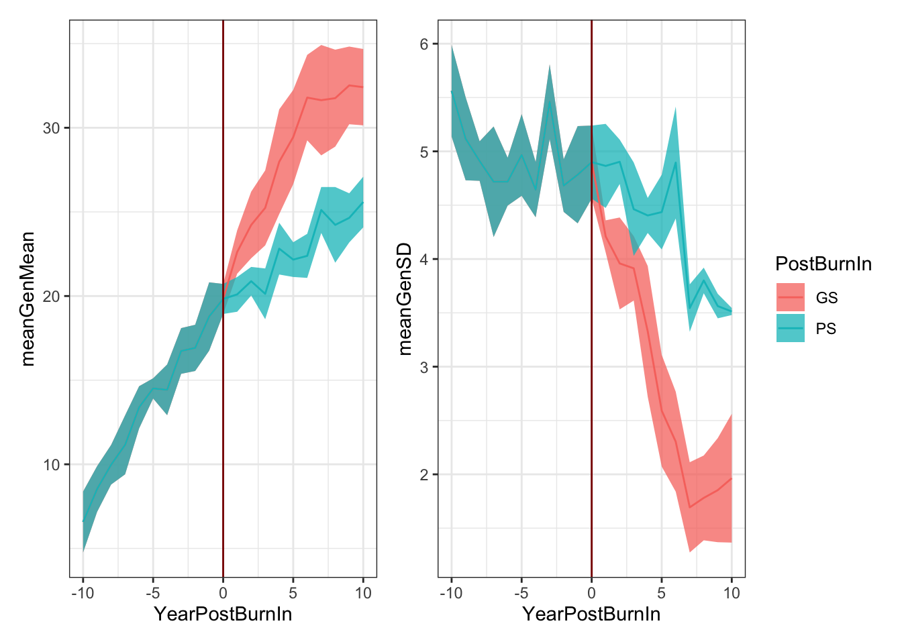
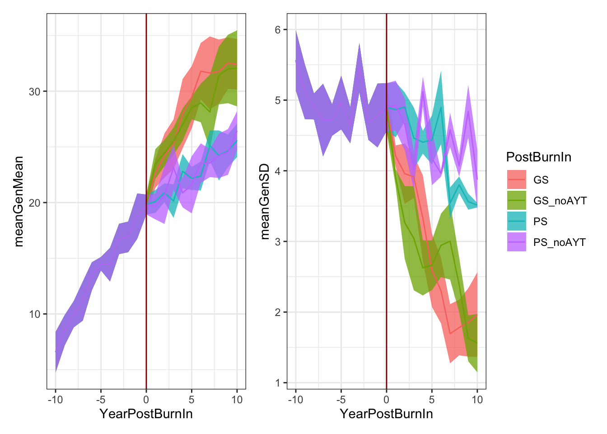

Last updated: 2021-09-18
Checks: 7 0
Knit directory: BreedingSchemeOpt/
This reproducible R Markdown analysis was created with workflowr (version 1.6.2). The Checks tab describes the reproducibility checks that were applied when the results were created. The Past versions tab lists the development history.
Great! Since the R Markdown file has been committed to the Git repository, you know the exact version of the code that produced these results.
Great job! The global environment was empty. Objects defined in the global environment can affect the analysis in your R Markdown file in unknown ways. For reproduciblity it’s best to always run the code in an empty environment.
The command set.seed(20210422) was run prior to running the code in the R Markdown file. Setting a seed ensures that any results that rely on randomness, e.g. subsampling or permutations, are reproducible.
Great job! Recording the operating system, R version, and package versions is critical for reproducibility.
Nice! There were no cached chunks for this analysis, so you can be confident that you successfully produced the results during this run.
Great job! Using relative paths to the files within your workflowr project makes it easier to run your code on other machines.
Great! You are using Git for version control. Tracking code development and connecting the code version to the results is critical for reproducibility.
The results in this page were generated with repository version 107fc24. See the Past versions tab to see a history of the changes made to the R Markdown and HTML files.
Note that you need to be careful to ensure that all relevant files for the analysis have been committed to Git prior to generating the results (you can use wflow_publish or wflow_git_commit). workflowr only checks the R Markdown file, but you know if there are other scripts or data files that it depends on. Below is the status of the Git repository when the results were generated:
Ignored files:
Ignored: .DS_Store
Ignored: .Rhistory
Ignored: .Rproj.user/
Ignored: analysis/.DS_Store
Ignored: analysis/images/.DS_Store
Ignored: data/.DS_Store
Ignored: output/.DS_Store
Untracked files:
Untracked: analysis/archive/
Untracked: code/runSchemesPostBurnIn_dev.R
Untracked: code/scrap.R
Untracked: data/baselineScheme.gsheet
Untracked: output/Icon
Untracked: output/benchmark_sim.rds
Untracked: output/benchmark_sims5.rds
Untracked: output/burnInSims_bsp1_iita_2021Aug27.rds
Untracked: output/burnInSims_bsp2_iita_2021Aug27.rds
Untracked: output/burnInSims_bsp3_iita_2021Aug27.rds
Untracked: output/burnInSims_iita_2021Aug27.rds
Untracked: output/burnIn_test.rds
Untracked: output/postBurnInGMS_test_DirDom_UCparent.rds
Untracked: output/postBurnInGMS_test_newBSP1.rds
Untracked: output/postBurnInGMS_test_newBSP2.rds
Untracked: output/postBurnInGMS_test_newBSP3.rds
Untracked: output/postBurnInGMS_test_newBSP3_GS.rds
Untracked: output/postBurnInGMS_test_newBSP3_PS.rds
Untracked: output/postBurnInGS_test.rds
Untracked: output/postBurnIn_test.rds
Untracked: output/testSims_GMS_ModelA_MeanBV_2021Sep15.rds
Untracked: output/test_burnInSims_2021Sep17.rds
Untracked: output/test_burnInSims_GS_2021Sep17.rds
Untracked: output/test_burnInSims_GS_noAYT_2021Sep17.rds
Untracked: output/test_burnInSims_PS_2021Sep17.rds
Untracked: output/test_burnInSims_PS_noAYT_2021Sep17.rds
Untracked: output/test_burnIn_sim.rds
Untracked: output/test_inputs_for_mmer.Rdata
Unstaged changes:
Modified: analysis/baselineSim.Rmd
Modified: analysis/genomicMateSelSims.Rmd
Modified: output/README.md
Modified: output/benchmark_sim2.rds
Modified: output/benchmark_sim3.rds
Modified: output/benchmark_sim4.rds
Modified: output/test_sim.rds
Note that any generated files, e.g. HTML, png, CSS, etc., are not included in this status report because it is ok for generated content to have uncommitted changes.
These are the previous versions of the repository in which changes were made to the R Markdown (analysis/burnInSims.Rmd) and HTML (docs/burnInSims.html) files. If you’ve configured a remote Git repository (see ?wflow_git_remote), click on the hyperlinks in the table below to view the files as they were in that past version.
| File | Version | Author | Date | Message |
|---|---|---|---|---|
| Rmd | 107fc24 | wolfemd | 2021-09-18 | Example simulations using new product pipeline and popimprovement functions, flexible to changes in VDP structure post burn-in. |
| html | eb13eb3 | wolfemd | 2021-08-29 | Build site. |
| Rmd | 7bccac8 | wolfemd | 2021-08-29 | Run some full-scale burn-in sims - IITA specs - tuning Ne and nQTL |
| html | e0d20bd | wolfemd | 2021-08-27 | Build site. |
| Rmd | 9d369ee | wolfemd | 2021-08-27 | Publish burnInSims with the toy example completed and the full analysis almost ready to run. |
Below, I show an example of how to run a simulation that includes a burn-in and post burn-in phase.
runBurnInScheme() function (not yet in AlphaSimHlpR; sourced from code/runBurnInScheme.R) to initiate a simulation with phenotypic selection.runSchemesPostBurnIn() with a new bsp (sourced from code/runSchemesPostBurnIn.R) to continue simulating restarting the previously started (burnt-in) simulations created in Step 1 but potentially with new bsp settings.Install the version of AlphaSimHlpR that I have been working on.
# To install the latest version
devtools::install_github("wolfemd/AlphaSimHlpR", ref = 'master')See full function reference manual here in my forked-repo of AlphaSimHlpR
Test the code with a small example. Source functions not yet included in AlphaSimHlpR from code/ directory.
suppressMessages(library(AlphaSimHlpR))
suppressMessages(library(tidyverse))
suppressMessages(library(genomicMateSelectR))
select <- dplyr::select
schemeDF<-read.csv(here::here("data","baselineScheme - Test.csv"),
header = T, stringsAsFactors = F)
bsp<-specifyBSP(schemeDF = schemeDF,
nChr = 3,effPopSize = 100,quickHaplo = F,
segSites = 400, nQTL = 40, nSNP = 100, genVar = 40,
gxeVar = NULL, gxyVar = 15, gxlVar = 10,gxyxlVar = 5,
meanDD = 0.5,varDD = 0.01,relAA = 0.5,
stageToGenotype = "PYT",
nParents = 10, nCrosses = 4, nProgeny = 50,nClonesToNCRP = 3,
phenoF1toStage1 = T,errVarPreStage1 = 500,
useCurrentPhenoTrain = F,
nCyclesToKeepRecords = 30,
nTrainPopCycles=6,
nYrsAsCandidates=1,
maxTrainingPopSize=500)
source(here::here("code","runBurnInSchemes.R"))
source(here::here("code","runSchemesPostBurnIn.R"))I created a CSV to specify a data.frame schemeDF defining stage-specific breeding scheme inputs.
schemeDF %>% rmarkdown::paged_table()Run 10 cycles of burn-in simulation.
The default is to set-up phenotypic selection only during burn-in.
burnInSims<-runBurnInSchemes(bsp = bsp,
nBurnInCycles=10,
selCritPop="parentSelCritBLUP",
selCritPipe="selCritIID",
iniFunc="initializeScheme",
productFunc="productPipeline",
popImprovFunc="popImprovByParentSel",
nReplications=4,nSimCores=4,
nBLASthreads=1,nThreadsMacs2=1)
saveRDS(burnInSims,file = here::here("output","test_burnInSims_2021Sep17.rds"))Two sets of post burn-in simulations, both with same bsp overall.
continue with phenotypic selection, no change.
Switch to parentSelCritGEBV.
NOTE: Below, switch (by default) to productPipelinePostBurnIn for the product advancement pipeline and it’s corresponding selection criteria productSelCritBLUP
burnInSims<-readRDS(file = here::here("output","test_burnInSims_2021Sep17.rds"))
postBurnIn_PS<-runSchemesPostBurnIn(simulations = burnInSims,
nPostBurnInCycles=10,
selCritPop="parentSelCritBLUP",
selCritPipe="productSelCritBLUP",
productFunc="productPipelinePostBurnIn",
popImprovFunc="popImprovByParentSel",
nSimCores=4,
nBLASthreads=1)
saveRDS(postBurnIn_PS,file = here::here("output","test_burnInSims_PS_2021Sep17.rds"))
#postBurnIn_PS$SimOutput[[1]]$records$stageOutputs
postBurnIn_GS<-runSchemesPostBurnIn(simulations = burnInSims,
nPostBurnInCycles=10,
selCritPop="parentSelCritGEBV",
selCritPipe="productSelCritBLUP",
productFunc="productPipelinePostBurnIn",
popImprovFunc="popImprovByParentSel",
nSimCores=4,
nBLASthreads=1)
saveRDS(postBurnIn_GS,file = here::here("output","test_burnInSims_GS_2021Sep17.rds"))
#postBurnIn_GS$SimOutput[[1]]$records$stageOutputsforSimPlot<-readRDS(file = here::here("output","test_burnInSims_GS_2021Sep17.rds")) %>%
mutate(PostBurnIn="GS") %>%
bind_rows(readRDS(file = here::here("output","test_burnInSims_PS_2021Sep17.rds")) %>%
mutate(PostBurnIn="PS")) %>%
unnest_wider(SimOutput) %>%
select(SimRep,PostBurnIn,records) %>%
unnest_wider(records) %>%
select(SimRep,PostBurnIn,stageOutputs) %>%
unnest() %>%
filter(stage=="F1") %>%
mutate(YearPostBurnIn=year-10)
library(patchwork)
meanGplot<-forSimPlot %>%
mutate(SimRep=paste0(PostBurnIn,SimRep)) %>%
group_by(PostBurnIn,YearPostBurnIn,year,stage) %>%
summarize(meanGenMean=mean(genValMean),
seGenMean=sd(genValMean)/sqrt(n())) %>%
ggplot(.,aes(x=YearPostBurnIn)) +
geom_ribbon(aes(ymin = meanGenMean - seGenMean,
ymax = meanGenMean + seGenMean,
fill = PostBurnIn),
alpha=0.75) +
geom_line(aes(y = meanGenMean, color=PostBurnIn))
sdGplot<-forSimPlot %>%
mutate(SimRep=paste0(PostBurnIn,SimRep)) %>%
group_by(PostBurnIn,YearPostBurnIn,year,stage) %>%
summarize(meanGenSD=mean(genValSD),
seGenSD=sd(genValSD)/sqrt(n())) %>%
ggplot(.,aes(x=YearPostBurnIn)) +
geom_ribbon(aes(ymin = meanGenSD - seGenSD,
ymax = meanGenSD + seGenSD,
fill = PostBurnIn),
alpha=0.75) +
geom_line(aes(y = meanGenSD, color=PostBurnIn))
(meanGplot | sdGplot) + patchwork::plot_layout(guides = 'collect') &
theme_bw() & geom_vline(xintercept = 0, color='darkred')
Try post burn-in sims with an altered VDP (specified in the bsp).
Do not change pop. genetic / genomic parameters.
Try removing middle “AYT” stage of the example schemeDF.
suppressMessages(library(AlphaSimHlpR))
suppressMessages(library(tidyverse))
suppressMessages(library(genomicMateSelectR))
select <- dplyr::select
schemeDF<-read.csv(here::here("data","baselineScheme - Test.csv"),
header = T, stringsAsFactors = F)
source(here::here("code","runSchemesPostBurnIn.R"))
burnInSims<-readRDS(file = here::here("output","test_burnInSims_2021Sep17.rds"))
newBSP<-specifyBSP(schemeDF = schemeDF %>% filter(stageNames!="AYT"),
nChr = 3,effPopSize = 100,quickHaplo = F,
segSites = 400, nQTL = 40, nSNP = 100, genVar = 40,
gxeVar = NULL, gxyVar = 15, gxlVar = 10,gxyxlVar = 5,
meanDD = 0.5,varDD = 0.01,relAA = 0.5,
stageToGenotype = "PYT",
nParents = 10, nCrosses = 4, nProgeny = 50,nClonesToNCRP = 3,
phenoF1toStage1 = T,errVarPreStage1 = 500,
useCurrentPhenoTrain = F,
nCyclesToKeepRecords = 30,
nTrainPopCycles=6,
nYrsAsCandidates=1,
maxTrainingPopSize=500)
postBurnIn_PS_newBSP<-runSchemesPostBurnIn(simulations = burnInSims,
newBSP = newBSP,
nPostBurnInCycles=10,
selCritPop="parentSelCritBLUP",
selCritPipe="productSelCritBLUP",
productFunc="productPipelinePostBurnIn",
popImprovFunc="popImprovByParentSel",
nSimCores=4,
nBLASthreads=1)
saveRDS(postBurnIn_PS_newBSP,file = here::here("output","test_burnInSims_PS_noAYT_2021Sep17.rds"))
postBurnIn_GS_newBSP<-runSchemesPostBurnIn(simulations = burnInSims,
newBSP = newBSP,
nPostBurnInCycles=10,
selCritPop="parentSelCritGEBV",
selCritPipe="productSelCritBLUP",
productFunc="productPipelinePostBurnIn",
popImprovFunc="popImprovByParentSel",
nSimCores=4,
nBLASthreads=1)
saveRDS(postBurnIn_GS_newBSP,file = here::here("output","test_burnInSims_GS_noAYT_2021Sep17.rds"))forSimPlot<-readRDS(file = here::here("output","test_burnInSims_GS_2021Sep17.rds")) %>%
mutate(PostBurnIn="GS") %>%
bind_rows(readRDS(file = here::here("output","test_burnInSims_PS_2021Sep17.rds")) %>%
mutate(PostBurnIn="PS")) %>%
bind_rows(readRDS(file = here::here("output","test_burnInSims_PS_noAYT_2021Sep17.rds")) %>%
mutate(PostBurnIn="PS_noAYT")) %>%
bind_rows(readRDS(file = here::here("output","test_burnInSims_GS_noAYT_2021Sep17.rds")) %>%
mutate(PostBurnIn="GS_noAYT")) %>%
unnest_wider(SimOutput) %>%
select(SimRep,PostBurnIn,records) %>%
unnest_wider(records) %>%
select(SimRep,PostBurnIn,stageOutputs) %>%
unnest() %>%
filter(stage=="F1") %>%
mutate(YearPostBurnIn=year-10)
library(patchwork)
meanGplot<-forSimPlot %>%
mutate(SimRep=paste0(PostBurnIn,SimRep)) %>%
group_by(PostBurnIn,YearPostBurnIn,year,stage) %>%
summarize(meanGenMean=mean(genValMean),
seGenMean=sd(genValMean)/sqrt(n())) %>%
ggplot(.,aes(x=YearPostBurnIn)) +
geom_ribbon(aes(ymin = meanGenMean - seGenMean,
ymax = meanGenMean + seGenMean,
fill = PostBurnIn),
alpha=0.75) +
geom_line(aes(y = meanGenMean, color=PostBurnIn))
sdGplot<-forSimPlot %>%
mutate(SimRep=paste0(PostBurnIn,SimRep)) %>%
group_by(PostBurnIn,YearPostBurnIn,year,stage) %>%
summarize(meanGenSD=mean(genValSD),
seGenSD=sd(genValSD)/sqrt(n())) %>%
ggplot(.,aes(x=YearPostBurnIn)) +
geom_ribbon(aes(ymin = meanGenSD - seGenSD,
ymax = meanGenSD + seGenSD,
fill = PostBurnIn),
alpha=0.75) +
geom_line(aes(y = meanGenSD, color=PostBurnIn))
(meanGplot | sdGplot) + patchwork::plot_layout(guides = 'collect') &
theme_bw() & geom_vline(xintercept = 0, color='darkred')
Previously, I used an empirical approach to estimate TrialType-specific error variances in terms of the IITA selection index (SELIND). See that analysis here.
TO DO: Need to run full-scale burn-in simulations for each breeding program.
20 burn-in cycles to match examples by EiB.
Genome / Pop specs
18 chrom,
Ne = 1000,
nSNP = 300 SNP/chrom (matches EiB examples)
nQTLperChr = 1000
nSegSites = 2000
Genetic architecture and Error variance
genVar = 750 and stage-specific errVar input from here
The max estimated errVar was for CET at ~3500,
so a genVar of 750 is to set up a entry level h2 around 0.2
meanDD = 0.3 and varDD = 0.05
MeanDD=0.23 and VarDD=0.06, based loosely on this estimate and note.Var(GxYr) == Var(G), again matching EiB example
read.csv(here::here("data","baselineScheme - IITA.csv"),
header = T, stringsAsFactors = F) %>%
select(-errVars,-PlantsPerPlot) %>%
left_join(readRDS(here::here("data","siErrorVarEst_byTrialType_directApproach_2021Aug25.rds")) %>%
select(-VarEsts) %>%
rename(errVars=siErrorVarEst)) %>%
select(-TrialType) %>%
mutate(trainingPopCycles=20) %>%
rmarkdown::paged_table()Breeding Scheme (schemeDF printed above)
Skips SDN stage. Is there an UYT2 (second year of UYT) to sim?
phenoF1toStage1 = FALSE
Population Improvement
nParents = 50, nCrosses = 100, nProgeny = 25,nClonesToNCRP = 3nParents = 100, nCrosses = 250, nProgeny = 10,nClonesToNCRP = 3 (EiB example)Additional Settings
nCyclesToKeepRecords = 30 (all)… what effect does this actually have? Just on storage of output?
trainingPopCycles = 15…
means 15 years of each stage used in each prediction…
What about an alternative: set a fixed TP size e.g. 5000 clones.
Run multiple versions of an burn-in simulation for 20 cycles.
Complete full-scale burn-in simulations
Burn-in and baseline simulations for National programs (NaCRRI, TARI, NRCRI, EMBRAPA). Still need input re: selection index weights and current program structure.
Begin the actually interesting simulations
Optimize budgets
Compare alternative VDPs
Test mate selection, optimal contributions and ultimately optimizing mating plans.
sessionInfo()R version 4.1.1 (2021-08-10)
Platform: x86_64-apple-darwin17.0 (64-bit)
Running under: macOS Big Sur 10.16
Matrix products: default
BLAS: /Library/Frameworks/R.framework/Versions/4.1/Resources/lib/libRblas.0.dylib
LAPACK: /Library/Frameworks/R.framework/Versions/4.1/Resources/lib/libRlapack.dylib
locale:
[1] en_US.UTF-8/en_US.UTF-8/en_US.UTF-8/C/en_US.UTF-8/en_US.UTF-8
attached base packages:
[1] stats graphics grDevices utils datasets methods base
other attached packages:
[1] patchwork_1.1.1 genomicMateSelectR_0.2.0 forcats_0.5.1
[4] stringr_1.4.0 purrr_0.3.4 readr_2.0.1
[7] tidyr_1.1.3 tibble_3.1.4 ggplot2_3.3.5
[10] tidyverse_1.3.1 AlphaSimHlpR_0.2.1 dplyr_1.0.7
[13] AlphaSimR_1.0.4 R6_2.5.1 workflowr_1.6.2
loaded via a namespace (and not attached):
[1] Rcpp_1.0.7 here_1.0.1 lubridate_1.7.10 assertthat_0.2.1
[5] rprojroot_2.0.2 digest_0.6.27 utf8_1.2.2 cellranger_1.1.0
[9] backports_1.2.1 reprex_2.0.1 evaluate_0.14 highr_0.9
[13] httr_1.4.2 pillar_1.6.2 rlang_0.4.11 readxl_1.3.1
[17] rstudioapi_0.13 whisker_0.4 jquerylib_0.1.4 rmarkdown_2.11
[21] labeling_0.4.2 munsell_0.5.0 broom_0.7.9 compiler_4.1.1
[25] httpuv_1.6.3 modelr_0.1.8 xfun_0.26 pkgconfig_2.0.3
[29] htmltools_0.5.2 tidyselect_1.1.1 fansi_0.5.0 crayon_1.4.1
[33] tzdb_0.1.2 dbplyr_2.1.1 withr_2.4.2 later_1.3.0
[37] grid_4.1.1 jsonlite_1.7.2 gtable_0.3.0 lifecycle_1.0.0
[41] DBI_1.1.1 git2r_0.28.0 magrittr_2.0.1 scales_1.1.1
[45] cli_3.0.1 stringi_1.7.4 farver_2.1.0 fs_1.5.0
[49] promises_1.2.0.1 xml2_1.3.2 bslib_0.3.0 ellipsis_0.3.2
[53] generics_0.1.0 vctrs_0.3.8 tools_4.1.1 glue_1.4.2
[57] hms_1.1.0 fastmap_1.1.0 yaml_2.2.1 colorspace_2.0-2
[61] rvest_1.0.1 knitr_1.34 haven_2.4.3 sass_0.4.0